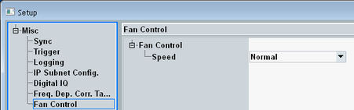

The fan of the R&S CMW is temperature-controlled. The speed of the fan is adapted dynamically depending on the temperature within the instrument. Three fan control modes are available.

Available modes:
"Normal" | "Normal" is the default mode. |
"Low (Laboratory)" | The temperature thresholds for fan speed control are higher than in normal mode. This setting results in higher temperatures and less noise emission. So this mode can be used to minimize the noise emission, for example in a laboratory environment. |
"High (Production Line)" | The temperature thresholds for fan speed control are lower than in normal mode. This setting results in lower temperatures and more noise emission. This mode can be used to maximize the cooling and thus the lifetime of the instrument components. The mode is intended for environments where the noise emission of the instrument is irrelevant, for example at a production line. |